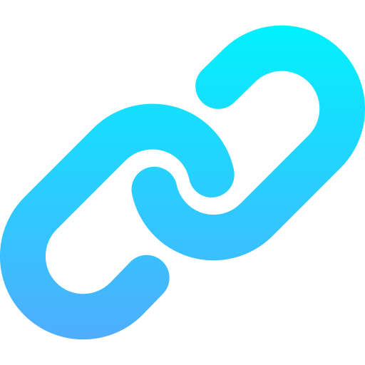

Мастерская - Библиотека
Проекты
Новый проект
{% for project in projects %}
{{ project in favorites and '★ ' or '' }}{{ project }}
{% endfor %}
{% if has_more %}
Загрузить ещё
{% endif %}
Загрузить
Записать аудио
Cнимок
B
I
U
←
↔
→
Новый абзац
Задача

Загрузить видео
Прикрепить файл
Gemini
Поиск
Чат
Хранилище
Телеграм
Сообщение
Якор
Главы
Доступ
Сохранить
▼
▼
Открыть проект
Переименовать
Удалить
Добавить в избранное
Изменить размер
Выровнять по левому краю
Центрировать
Выровнять по правому краю
Перевернуть камеру
Сделать снимок
Отменить
Выберите якорь
x